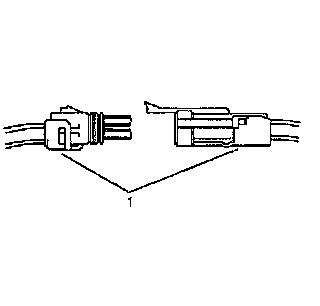
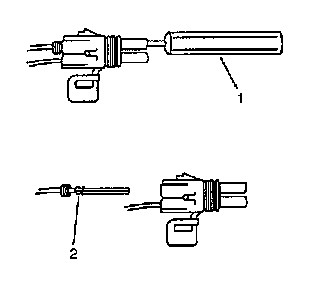
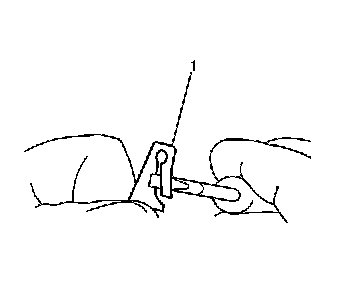

Delphi Connectors (Push To Seat)
DELPHI CONNECTORS (PUSH TO SEAT)
TOOLS REQUIRED
J-38125 Terminal Repair Kit
TERMINAL REMOVAL
Follow the steps below in order to repair push to seat connectors.

1. Remove the terminal position assurance (TPA) device, the connector position assurance (CPA) device, and/or the secondary lock.
2. Separate the connector halves (1).

3. Use the proper pick or removal tool (1) in order to release the terminal. See the release tool cross reference in the Reference Guide of the J-38125 to ensure that the correct release tool is used.
4. Gently pull the cable and the terminal (2) out of the back of the connector.

5. Re-form the locking device if you are going to reuse the terminal (1).
6. To repair the terminal, refer to Terminal Repair.
TERMINAL REPAIR
1. Slip the cable seal away from the terminal.
2. Cut the wire as close to the terminal as possible.
3. Slip a new cable seal onto the wire.
4. Strip 5 mm (3/16 in) of insulation from the wire.
5. Crimp a new terminal to the wire.
6. Solder the crimp with rosin core solder.
7. Slide the cable seal toward the terminal.
8. Crimp the cable seal and the insulation.
9. If the connector is outside of the passenger compartment, apply grease to the connector.
REINSTALLING TERMINAL
1. In order to reuse a terminal or lead assembly, refer to Wiring Repairs.
2. Ensure that the cable seal is kept on the terminal side of the splice.
3. Insert the lead from the back until it catches.
4. Install the TPA, CPA, and/or the secondary locks.